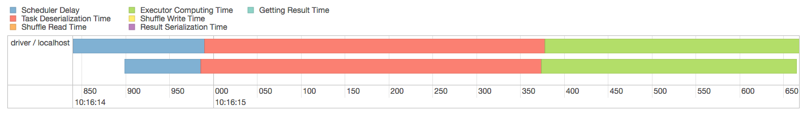

While Apache Spark’s level of abstraction eases the development of jobs running on distributed data, it’s not always easy to figure out how to optimize them, or how to avoid common pitfalls. A well-known source of performance issues is shuffling. Shuffling is a process of data redistribution across partitions; when you deal with a huge amount of data (the infamous Big Data, you know) and these data can be moved over the wire, shuffling may take a considerable amount of time. While the decision of avoiding shuffling as much as possible is a no-brainer, it isn’t always easy to figure out which operations may cause shuffling.
In this blog post, I’ll prove that shuffling doesn’t occur when count() is invoked.
Prerequisites
I’ll use Apache Spark 1.6.1. At the time of writing, it’s the latest stable release available.
Apache Spark Job Example
As you may very well know, count() is an action; in the Spark lingo, this means that count(): - is eagerly evaluated - doesn’t return another RDD
Moreover, for obvious reasons, count() needs to iterate the whole data set. All this may lead to the belief that count() leads to data shuffling. But does it really happen? Let’s try it.
I created a simple (dumb) Spark job:
val shakespeareRDD = sc.textFile(getClass.getResource("/all-shakespeare.txt").getPath)
.flatMap(_.split("""\w+"""))
val wordCountRDD = shakespeareRDD.count
logger.info(s"There are $wordCountRDD words contained in the documents. Using an RDD.")Let’s analyze what happens here: a text file is loaded from the resource folder, then each line is turned into a bag of words, and finally the words are counted. Simple as that. Note that a word can be counted more than once; this means that, in case of a phrase like “Hello World Hello”, the result will be 3 (i.e. “Hello” will be counted twice) instead of 2.
Now, does shuffling occur? Let’s open Spark’s Web UI. From here, let’s click on the “Stages” tab and select the “count at WordCount.scala” stage. Finally, let’s open the Event Timeline.

Durations may vary a lot here, executor computing time may increase or decrease, but no shuffling write time was spent.
Why?
In order to understand why no shuffling occurs, let’s have a look at the source code. As stated above, this code refers to Apache Spark 1.6.1. Here’s the RDD implementation of method count():
/**
* Return the number of elements in the RDD.
*/
def count(): Long = sc.runJob(this, Utils.getIteratorSize _).sumIt seems here that most of the work is demanded to the Spark Context. Let’s see what runJob() is:
/**
* Run a job on all partitions in an RDD and return the results in an array.
*/
def runJob[T, U: ClassTag](rdd: RDD[T], func: Iterator[T] => U): Array[U] = {
runJob(rdd, func, 0 until rdd.partitions.length)
}Let’s follow the invocation chain a bit.
/**
* Run a function on a given set of partitions in an RDD and return the results as an array.
*/
def runJob[T, U: ClassTag](
rdd: RDD[T],
func: (TaskContext, Iterator[T]) => U,
partitions: Seq[Int]): Array[U] = {
val results = new Array[U](partitions.size)
runJob[T, U](rdd, func, partitions, (index, res) => results(index) = res)
results
}Seems here that an empty array (which will be the result of the computation) is initialized, then filled with some result. OK, everything is clear now, isn’t it? Well, not really. Let’s follow the invocation chain a little bit further, up to…
/**
* Run a function on a given set of partitions in an RDD and pass the results to the given
* handler function. This is the main entry point for all actions in Spark.
*/
def runJob[T, U: ClassTag](
rdd: RDD[T],
func: (TaskContext, Iterator[T]) => U,
partitions: Seq[Int],
resultHandler: (Int, U) => Unit): Unit = {
if (stopped.get()) {
throw new IllegalStateException("SparkContext has been shutdown")
}
val callSite = getCallSite
val cleanedFunc = clean(func)
logInfo("Starting job: " + callSite.shortForm)
if (conf.getBoolean("spark.logLineage", false)) {
logInfo("RDD's recursive dependencies:\n" + rdd.toDebugString)
}
dagScheduler.runJob(rdd, cleanedFunc, partitions, callSite, resultHandler, localProperties.get)
progressBar.foreach(_.finishAll())
rdd.doCheckpoint()
}OK, this is the final runJob() method, but (surprise!) it calls yet another runJob() method, this time the DAG Scheduler’s.
Let’s have a look at this one, too.
/**
* Run an action job on the given RDD and pass all the results to the resultHandler function as
* they arrive.
*
* @param rdd target RDD to run tasks on
* @param func a function to run on each partition of the RDD
* @param partitions set of partitions to run on; some jobs may not want to compute on all
* partitions of the target RDD, e.g. for operations like first()
* @param callSite where in the user program this job was called
* @param resultHandler callback to pass each result to
* @param properties scheduler properties to attach to this job, e.g. fair scheduler pool name
*
* @throws Exception when the job fails
*/
def runJob[T, U](
rdd: RDD[T],
func: (TaskContext, Iterator[T]) => U,
partitions: Seq[Int],
callSite: CallSite,
resultHandler: (Int, U) => Unit,
properties: Properties): Unit = {
val start = System.nanoTime
val waiter = submitJob(rdd, func, partitions, callSite, resultHandler, properties)
// Note: Do not call Await.ready(future) because that calls `scala.concurrent.blocking`,
// which causes concurrent SQL executions to fail if a fork-join pool is used. Note that
// due to idiosyncrasies in Scala, `awaitPermission` is not actually used anywhere so it's
// safe to pass in null here. For more detail, see SPARK-13747.
val awaitPermission = null.asInstanceOf[scala.concurrent.CanAwait]
waiter.completionFuture.ready(Duration.Inf)(awaitPermission)
waiter.completionFuture.value.get match {
case scala.util.Success(_) =>
logInfo("Job %d finished: %s, took %f s".format
(waiter.jobId, callSite.shortForm, (System.nanoTime - start) / 1e9))
case scala.util.Failure(exception) =>
logInfo("Job %d failed: %s, took %f s".format
(waiter.jobId, callSite.shortForm, (System.nanoTime - start) / 1e9))
// SPARK-8644: Include user stack trace in exceptions coming from DAGScheduler.
val callerStackTrace = Thread.currentThread().getStackTrace.tail
exception.setStackTrace(exception.getStackTrace ++ callerStackTrace)
throw exception
}
}Almost there now. It seems that what we are looking for is contained inside method submitJob().
/**
* Submit an action job to the scheduler.
*
* @param rdd target RDD to run tasks on
* @param func a function to run on each partition of the RDD
* @param partitions set of partitions to run on; some jobs may not want to compute on all
* partitions of the target RDD, e.g. for operations like first()
* @param callSite where in the user program this job was called
* @param resultHandler callback to pass each result to
* @param properties scheduler properties to attach to this job, e.g. fair scheduler pool name
*
* @return a JobWaiter object that can be used to block until the job finishes executing
* or can be used to cancel the job.
*
* @throws IllegalArgumentException when partitions ids are illegal
*/
def submitJob[T, U](
rdd: RDD[T],
func: (TaskContext, Iterator[T]) => U,
partitions: Seq[Int],
callSite: CallSite,
resultHandler: (Int, U) => Unit,
properties: Properties): JobWaiter[U] = {
// Check to make sure we are not launching a task on a partition that does not exist.
val maxPartitions = rdd.partitions.length
partitions.find(p => p >= maxPartitions || p < 0).foreach { p =>
throw new IllegalArgumentException(
"Attempting to access a non-existent partition: " + p + ". " +
"Total number of partitions: " + maxPartitions)
}
val jobId = nextJobId.getAndIncrement()
if (partitions.size == 0) {
// Return immediately if the job is running 0 tasks
return new JobWaiter[U](this, jobId, 0, resultHandler)
}
assert(partitions.size > 0)
val func2 = func.asInstanceOf[(TaskContext, Iterator[_]) => _]
val waiter = new JobWaiter(this, jobId, partitions.size, resultHandler)
eventProcessLoop.post(JobSubmitted(
jobId, rdd, func2, partitions.toArray, callSite, waiter,
SerializationUtils.clone(properties)))
waiter
}What does JobWaiter do? While it is quite apparent, let’s just focus on one of its methods: taskSucceeded(), which will use the resultHandler function, the last piece of the puzzle.
override def taskSucceeded(index: Int, result: Any): Unit = {
// resultHandler call must be synchronized in case resultHandler itself is not thread safe.
synchronized {
resultHandler(index, result.asInstanceOf[T])
}
if (finishedTasks.incrementAndGet() == totalTasks) {
jobPromise.success(())
}
}We now have everything we need: in fact, submitJob() tells us exactly what is going on under the hood (and probably you have already guessed, haven’t you?). It tells us that “func [is] a function to run on each partition of the RDD”. Similarly, method taskSucceeded() tells us what happens when the task… well… succeeds: the resultHandler function is invoked, applying the result and an index.
Let’s try to reconstruct what’s going on here: - count() calls method runJob() of SparkContext; - runJob() creates an empty “result” Array and (after a long invocation chain) calls method submitJob() of DAGScheduler - method submitJob() of DAGScheduler creates a JobWaiter object, which waits for a DAGScheduler job to complete. As soon as the task finishes, it passes its result to the given handler function.
What was this handler function? Well, in our case, we have to go back where everything started: method count(). There, we find out that the function that was passed was Utils.getIteratorSize(). Let’s have a look at it:
/**
* Counts the number of elements of an iterator using a while loop rather than calling
* [[scala.collection.Iterator#size]] because it uses a for loop, which is slightly slower
* in the current version of Scala.
*/
def getIteratorSize[T](iterator: Iterator[T]): Long = {
var count = 0L
while (iterator.hasNext) {
count += 1L
iterator.next()
}
count
}Just a simple counter! So, our “result” Array (you remember it, don’t you) is simply filled with the count of the elements in each partition.
/**
* Return the number of elements in the RDD.
*/
def count(): Long = sc.runJob(this, Utils.getIteratorSize _).sumAfter that, we get the sum of the Array and (ta-daan!) here is our count.
Conclusion
So, how could that happen? Why wasn’t it obvious since the beginning?
Well, there’s no easy answer here, no fancy source we can browse. If I may put my two cents in, I would say that many developers (including me) tend to mistake shuffling for simple data movement. While data movement simply means… well… moving some kind of data, shuffling is a bit more tricky: it doesn’t simply move data; it moves data to the right partition.
Consider your typical Hadoop MapReduce job: there, shuffling isn’t just moving data; it’s moving all data pertaining to a certain word to the same reducer. In other words, the system must send the data of a certain word to all reducers (i.e. to all nodes of the cluster), so that data is correctly aggregated; this has two important effects: - data is moved from one node to all the others, so the number of movements is exponential; - data is quite raw, since it will be aggregated after the shuffling phase.
On the other hand, our simple count example, here, doesn’t require shuffling: data is moved from a node to the master (only one move), and data is almost completely refined (each partition returns the number of items it contains, so just an integer is moved over the wire).
And that’s it! Hope it helps!